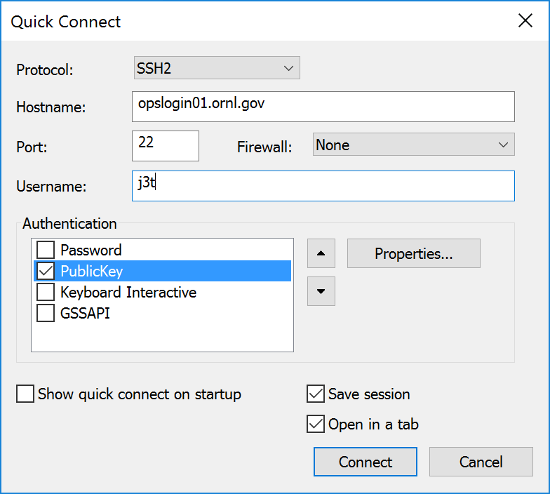

Client Prerequisites
- HSPD-12 or LSSO (site issued) SmartCard badge. The eToken cannot be used for SSH.
- You must know your PIN (this can be reset at the badging office).
- Supported SmartCard reader for your desktop/laptop.
- Request access to the SSH jump servers and resend your password as needed before using them. See this page for the server list.
SecureCRT
- Install SecureCRT version 8.0 or newer.
- This is paid commercial software. A 30 day trial can be downloaded from here.
- ITSD staff can request a licensed copy by sending an e-mail to Spuds-Support@ornl.gov.
- Non-ITSD staff can order a licensed copy from Marketplace.
- Insert your SmartCard.
- Launch SecureCRT.
- File -> Quick Connect (the dialog may be open by default)
- Hostname: jump-server-name.ornl.gov (e.g. opslogin01.ornl.gov)
- Username: your-username
- Authentication:
- [ ] Password
- [X] PublicKey
- [ ] Keyboard Interactive
- [ ] GSSAPI

- Click Authentication -> PublicKey -> Properties
- Use session public key setting
- Use a certificate from your personal CAPI store

- Click the selection icon next to Certificate to use:
- HSPD-12 badge: The certificate should be named: Firstname Lastname (Affiliate)
- LSSO badge: The certificate should be named: Lastname, Firstname (username)
- Highlight each non-expired certificate (one at a time and starting from the top) and click Properties
- Click the Details tab
- Click the Subject Alternative Name field
- HSPD-12 badge: The correct certificate will have a principal name of number@FEDIDCARD.GOV
- LSSO badge: The correct LSSO certificate will have a principal name of ucams-username@ornl.gov
- When you have found the correct certificate, ensure that it is highlighted and click OK.
- Click OK to close the Public Key Properties.
- Click Connect.
- Enter your PIN when prompted.
PuTTY-CAC
- Download putty.exe from here
- In the connection seeings, click SSH-> CAPI
- Check: Attempt CAPI certificate
- Click Cert -> Browse and select your certificate
- HSPD-12 badge: The certificate should be named: Firstname Lastname (Affiliate)
- LSSO badge: The certificate should be named: Lastname, Firstname (username)
- Highlight each non-expired certificate (one at a time and starting from the top) and click Properties
- Click the Details tab
- Click the Subject Alternative Name field
- HSPD-12 badge: The correct certificate will have a principal name of number@FEDIDCARD.GOV
- LSSO badge: The correct LSSO certificate will have a principal name of ucams-username@ornl.gov
- When you have found the correct certificate, ensure that it is highlighted and click OK.
- Enter a remote server name and save your session.
- Click Open to connect.
- Enter your SmartCard pin when prompted.